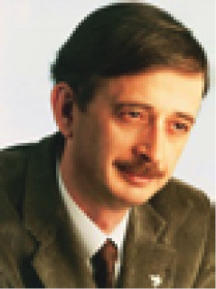

Ş
şablon eşleme (template matching) Şeylerin ve biçimlerin bellekte bir şablon olarak temsil edildiğini ve biçim tanımanın, algılanan nesnenin biçiminin bellekteki bu şablonlarla karşılaştırılmasıyla gerçekleştirildiğini savunan bir biliş psikolojisi modeli. Buna göre, algılanan biçimin bellekteki şablona tam olarak uyması, biçimin tanınmasını sağlıyor. Bu model, bilgisayar uygulamalarının temelini oluştursa da insanın biçim algısının yanında bilgisayar uygulaması basit kalıyor. Biliş psikologları bu zorluğu aşmak için başka kuramlar da ortaya koymuşlardır. Bkz. özellik analizi; prototip eşleme.
şahsiyet analizi Bkz. kişilik çözümlemesi.
şahsiyet intibakı Bkz. kişilik uyumu.
şahsiyet tahlili Bkz. kişilik çözümlemesi.
şakak lopları (temporal lobes) Beyin kabuğundaki, ön ve yan lopların arkasında bulunan ve işitme merkezi ile görsel işlem merkezini içeren; buna bağlı olarak dilin ve konuşma yetisinin kazanılmasında olduğu gibi görsel algıda da önemli rol oynayan bölümü. Gerçekte iki şakak lopu vardır. Bunlardan sağda olanı görsel bellekle; solda olanı ise sözel bellekle ilişkilidir. Bu loplar zedelendiğinde görme kusurları ve bellek yitimi ortaya çıkıyor. Bkz. beyin lopları; şakak lopu bellek yitimi; şakak lopu etkinliği; şakak lopu sarası.
şakak lopu bellek yitimi (temporal lobe amnesia) Şakak loplarındaki sinir dokularının; özellikle hipokampın, amigdal ve onunla ilgili yapıların zarar görmesi sonucu ortaya çıkan bir bellek yitimi.
şakak lopu etkinliği (temporal lobe activity) Beynin şakak loplarında sık sık tuhaf duygularla, zaman çarpıtmalarıyla ve sanrılarla ilişkili olarak gözlemlenen elektriksel etkinlikler. Bazen hayalet görme, uzaylılarca kaçırılma gibi görünürde normal üstü olan yaşantılara bu etkinlik, bir açıklama olarak kullanılıyor.
şakak lopu sarası (temporal lobe epilepsy) Şakak lopundan kaynaklanan ve birdenbire ortaya çıkan öfke patlamaları, şiddet eğilimli davranışlar, nedensiz gülmeler, tuhaf vücut hareketleri gibi belirtilerle tanımlanan sara türü. Bkz. sara.
Şaman (shaman) Sibirya’da ve Moğolistan’da yaşayan Türk boylarında tef çalarak, dans ederek ve şarkı söyleyerek tören (kamlama) yapan ve bu yolla iyi ve kötü ruhlarla ilişki kurarak hastaları iyileştirdiğine, istenilen birtakım sonuçları elde ettiğine inanılan ve bir tür dinsel kişiliği olan kimselere Avrupalıların verdikleri ad; kam, kaman. Bkz.Şamanlık.
Şamanizm Bkz. Şamanlık.
Şamanlık (Shamanism) Şamanların doğa ötesi varlıklarla ilişki kurarak onların olağanüstü güç ve yeteneklerini benliklerine katmaları için yapılan dinsel-büyüsel uygulamalar ve törenler; Türklerin Müslüman oluşlarından önceki en yaygın inançlarından başlıcası; Şamanizm. Şamanlık, Asya’daki çeşitli Türk, Moğol ve Tunguz halklarının tarihinde ve kültüründe önemli bir yer tutuyordu. Bu inanç sisteminde evren, en büyük ruhun bulunduğu gökyüzü; insanoğlunun yaşadığı yeryüzü ve kötü ruhların yaşadığı yeraltı olarak üçe ayrılıyordu. Evrenin iyi ve kötü ruhların etkisinde olduğu ve Şaman’ın bu ruhlarla ilişki kurduğu kabul ediliyordu. Şamanlık, Asya’daki kendine özgü bir din; bağı ya da büyünün bir türü olmayıp, bu iki alanı da ilgilendiren yanları bulunan; türlü din ve dünya görüşlerini birleştiren bir inanç ve uygulamadır. Şamanlığın belirgin tema’sı, ata ruhuna saygı, bağlılık ve ondan yardım ummak olarak özetleniyor. Bu özelliği ile Şamanlık bir tür insani bir dindir. Şamanlar, boyların sayılan, her türlü törenlerini yöneten; büyücülük, hekimlik, yargıçlık gibi görevleri üstlenen, kişileriydiler. Bkz. Şaman.
şartlandırma Bkz. koşullama.
şartlı heyecan reaksiyonu Bkz. koşullu coşku tepkisi.
şartlı ketleme Bkz. koşullu ketleme.
şartlı pekiştirici uyarıcı Bkz. koşullu pekiştirici uyarıcı.
şartlı reaksiyon Bkz. koşullu tepki.
şartlı refleks Bkz. koşullu refleks.
şartlı tepki Bkz. koşullu tepki.
şartlı uyaran Bkz. koşullu uyaran.
şartsız refleks Bkz. koşulsuz refleks.
şartsız tepki Bkz. koşulsuz tepki.
şartsız uyaran Bkz. koşulsuz uyaran.
şaşırma 1. ((confused) Ne söyleyeceğini, ne yapacağını bilememe; işin içinden bir türlü çıkılamayacak duruma gelme. 2. (lost) Artık ne söylediğini, ne yaptığını bilememe. 3. (mistaken) Hataya düşmek: Sözünü şaşırmak, hesabını şaşırmak. 4. (upset) Çekinme, ürküntü duyma.
şefkat Bkz. sevecenlik.
şefkat bağları Bkz. sevecenlik bağları.
şefkat davranışları Bkz. sevecenlik davranışları.
şefkat dürtüsü Bkz. sevecenlik itkisi.
şefkat içerikli sevgi Bkz. sevecenlik içerikli sevgi.
şefkat yönelimi Bkz. sevecenlik yönelimi.
şehevi Bkz. erojen.
şehvet Bkz. cinsel istek.
şekil algısı Bkz. biçim algısı.
şekil ayırt etme Bkz. biçim ayırt etme.
şekil değişmezliği Bkz. biçim değişmezliği.
şekillendirme Bkz. biçimlendirme.
şekil tanıma Bkz. biçim tanıma.
şekil verme Bkz. biçim verme.
şema (schema) 1. Temel bir bilgi birimi; dünyaya ilişkin deneyime dayalı bir genelleme; bir insan, yer, olay ve benzerlerine ilişkin bilgileri örgütleyen ve bunların sentezini gerçekleştiren zihinsel bir çerçeve. Nesnelere, olaylara ya da insanlara ilişkin algıları etkileyebilen tutarlı, örgütlü bir inançlar ve beklentiler grubu. Şemalarla, düzenliliklerin önerme biçiminde ya da algısal sınıflandırmalar halinda kodlanması ve bu hazır kodların, sonraki olaylar algılanır ve yorumlanırken kullanılması olanaklı kılınıyor. Şemalar, şeylerin özel değil; genel ayrıntılarını temsil ettikleri için de birçok duruma uygulanabiliyor. Örneğin, sokak çocuklarının tehlikeli olduğu konusunda bir şema geliştirmişsek, davranışlarımızı bu şemaya göre ayarlıyor ve bu şemaya uymayan bilgileri göz ardı ediyor; uyan bilgileri kolaylıkla kabul ediyoruz. Bu niteliği ile şema, biliş süreçlerinde büyük bir ekonomi sağlıyor. 2. Nesneleri tanıma ya da belli bir eylemi başlatma sırasında kullanılan ve sinir sisteminde saklı olan bir tür şablon. 3. Bebeklerde emme ya da kavrama gibi reflekslere dayalı tutarlı bir devinim yapısı. 4. Piaget’ye göre, ilk tanım çerçevesinde farklı durumlarda uygulanan ve örgütlü davranış biçimlerinden oluşan bilişsel yapılar. Bkz. bilişsel gelişim kuramı.
şema kuramı (schema theory) Bilgilerin uzun süreli bellekte olaylara, insanlara ya da nesnelere ilişkin bilgileri örgütleyen ve yorumlayan bilişsel yapılar biçiminde; yani birer şema olarak saklandığını açıklayan kuram. Bkz. bellek.
şeref Bkz. onur.
ŞERİF, Muzaffer (Başoğlu) (1906-1988) Türk asıllı Amerikalı psikolog; sosyal psikolojinin kurucularından. Şerif, İzmir’in Ödemiş ilçesinde varlıklı bir ailenin beş çocuğundan ikincisi olarak dünyaya geldi. Ortaöğrenimini İzmir, Amerikan Koleji’nde; yüksek öğrenimini İstanbul Üniversitesi Edebiyat Fakültesi Felsefe Bölümü’nde tamamladı. 1929’da İzmir Erkek Öğretmen Okulu’nda felsefe; 1932’de Ankara Gazi Terbiye Enstitüsü’nde psikoloji öğretmenliğine getirildi. Aynı yıl, lisansüstü öğrenimi için ABD’ye gönderildi. Orada Harward Üniversitesi’nden aynı yıl, yüksek lisans derecesini aldı. 1935’te Columbia Üniversitesi Psikoloji Bölümü’nden Algıdaki Bazı Toplumsal Etkenler konulu teziyle doktorasını aldı. 1937’de Türkiye’ye döndüğünde Gazi Terbiye Enstitüsü’ndeki görevine ek olarak, 1939’dan sonra Ankara Üniversitesi Dil ve Tarih-Coğrafya Fakültesi Felsefe Bölümü’nde psikoloji doçenti olarak ders vermeye başladı. 1940-1944 arasında Muzaffer Şerif Başoğlu imzasıyla Yurt ve Dünya, Adımlar ve İnsan dergileriyle Tan gazetesine, başta ırkçılık olmak üzere dönemin ülke sorunlarını konu alan makaleler yazdı. 1943’te yayımladığı Irk Psikolojisi adlı kitabında üstün ırk kuramını ve ırkçı-Turancı düşünceleri eleştirdi. 1944’te derslerinde siyasal propaganda yaptığı gerekçe gösterilerek tutuklandı. Serbest bırakıldıktan sonra üniversitedeki görevinden ayrıldı. 1945’te Princeton Üniversitesi’nin, hapiste iken kendisine yaptığı çağrıyı kabul ederek ABD’ye gitti. 1946’da Yale Üniversitesi’ne geçti. Bir süre sonra Oklahama Üniversitesi’nde, ileride sosyal psikoloji alanında birçok deneyin yapılacağı ünlü Grup İlişkileri Enstitüsü’nü kurdu. 1980’lerin başında Pennsylvania Park Üniversitesi’nden emekli oldu. Şerif’in (Sherif’in) temel hedefi, sosyal bilimler içinde bir antropolojinin kurulmasına yardımcı olmaktı. Ona göre, davranışın toplumsal-kültürel çevrede bilimsel olarak incelenmesi demek olan sosyal psikoloji, böyle bir bilimin oluşturulmasında önemli bir katkı yapma olanağına sahiptir. Bireyler, yalnızca içine doğdukları ve içinde büyüdükleri, yer aldıkları grupların toplumsal-kültürel özelliklerinden etkilenmiyorlar; aynı zamanda savaş, barış, devrim gibi tarihsel olaylarla kültürü de yaratıyorlar. O nedenle insani olayları anlamak için bireylerin tüm çevreye; özellikle de toplumsal-kültürel çevreye karşı tepki süreçlerini ve bunun özelliklerini anlamak gerekiyor. Şerif, bilimsel çalışmalarına, psikologların laboratuvar araştırmalarıyla sosyologların ve kültürel antropologların ilgilendikleri konular arasındaki boşluğun nasıl doldurulabileceği sorusunun öne çıktığı 1930’lu yıllarda başladı. ABD’li psikolog Gardner Murphy’yle birlikte, söz konusu boşluğun, toplumsal kuralların (normların) algılama, yargılama ve anımsama gibi temel psikolojik süreçlere etkilerinin laboratuvar deneyleri yoluyla incelenerek doldurulabileceğini savundu. Şerif, belirsizliği en aza indirme psikolojik eğilimine sahip olan bireylerin, iletişimde birbirini etkileme ve bir kural geliştirme durumunda kaldıkları, kuralın sonradan tek tek bireylerin davranışlarını etkilediği varsayımını doğrulamak için deneyinde otokinetik etki olarak bilinen bir görsel algı yanılgısından yararlandı. Bunun sonuçlarını Sosyal Kuralların Psikolojisi’nde ele aldığı bu deneyi ile, kendi başlarına iken birer yargı sıtandardı geliştirmiş olan bireylerin, grupta iken ortak bir standart yargıya yöneldiklerini; böylece birey olarak geliştirilen öznel gerçeğin yerini, grubun geliştirdiği toplumsal gerçeğin aldığını gösterdi. Aynı deneyle, başlangıçta grup içinde var olmayan; ancak, bir kez oluştuktan sonra grubu oluşturan bireylerce benimsenen kuralın gerçeği yansıttığı inancının oluştuğunu, grubun büyüklüğünün, söz birliği etmiş olmanın, grup üyelerinin ya da iktidar kaynağının bireylerin gözündeki saygınlığının, bu kurala uyma davranışını olumlu olarak etkilediğini kanıtladı. Sonraki çalışmalarında Şerif, gruplar arası çatışma üzerine eğildi. Bu çatışmanın, grupların, karşıt gruplara ilişkin olarak üyelerine, açıklamadan verdikleri ve aralarındaki çatışmayı yansıtan tutumlar olarak tanımladığı kalıplaşmış tutum ya da yargıların sonucunda ortaya çıktığını savundu. Bu yaklaşımla grupların kendi çıkarlarını sürdürmek için kalıp tutumlarını pek değiştirmediklerini vurguladı; ancak, herkesin istediği; ama herhangi bir grubun kendi kaynakları ve iktidarıyla gerçekleştiremeyeceği amaçların, gruplar arası çatışmayı azaltacağını belirtti. Tutum oluşumu ve değişim konularına da önemli katkılarda bulunan Şerif, ergenlik çağını ele aldı ve Batı toplumlarında bu çağdaki bireyin benimseme gruplarının ortasında tam bir belirsizlik ve çatışma durumunda kalmasının benlik tutumlarını nasıl etkilediğini ortaya koydu. Sosyal psikolojinin kurucular kuşağında yer alan Şerif, bu bilim dalını sistemleştirme çabalarıyla ve bireysel davranışların toplumsal durumlar ve kültürel yapılar içinde kavranmasında deneysel psikoloji yöntemlerini kullanmadaki başarısıyla bu bilim dalının en önde gelen birkaç kişisinden biri oldu. Ayrıca İbrahim Yasa, Mümtaz Turhan, Mübeccel Kıray, Fatma Başaran ve Çiğdem Kâğıtçıbaşı gibi Türk bilim insanları, toplumsal değişimle ilgili köy araştırmalarında Şerif’in Türkiye’de iken gerçekleştirdiği ve 1948’de Sosyal Psikolojinin Anahatları adıyla yayımladağı araştırmasında kullandığı temel psikoloji kavramlarından yararlandılar. Başlıca yapıtları: Sosyal Kuralların Psikolojisi (1985), Irk Psikolojis 1943), Değişen Dünya (1945), Sosyal Psikolojinin Anahatları (C. W. Sherif ile birlikte) (1948), Uyum ve Gerilim İçinde Gruplar (C. W. Sherif ile birlikte) (1953), Toplumsal Yargı: İletişimde ve Tutum Değişikliğinde Özümseme ve Konstrat Etkileri (C. I Hovland ile birlikte) (1961), Özümleme Kümeleri: Ergenlerin Uyum ve Çatışmasının Açığa çıkarılması (C. W. Sherij ile birlikte) (1964), Grup Çatışması ve İşbirliğinin Sosyal Psikolojisi (1966). Bkz. Robber Mağarası; yüksek hedef.

şeytan girmesi (demomic possession) Şeytanın ya da kötü bir ruhun, kişinin bedenine girerek onu deli, hasta ya da suçlu kişi durumuna getirdiğine inanma.
şeytan fobisi (demonophobia) Şaytana ya da kötü ruhlara yönelik olarak duyulan hastalıklı korku; şeytan yılgısı.
şeytan yılgısı Bkz. şeytan fobisi.
şımarık çocuk (petted child) Kendisine gösterilen aşırı sevgi ve saygıdan ya da verilen değerden yüz bulup yersiz ve aşırı, rahatsız edici davranışlar gösteren çocuk. Her istediğini ve kaprislerini yaptırmaya alışmış, kötü eğitilmiş çocuk.
şıpsevdilik (puppy love, calf love) Ergenlik döneminde karşı cinsten birine aşırı ve romantik tutulma durumu. İlk aşklar. Bu sevgi biçimi ilgililerce önemli sayılsa da başkaları bunu geçici olarak niteliyor. Bkz. çocuk ve ergenin gelişim dönemleri ( 4)Ergenlik ve Delikanlılık Dönemi).
şiddet (violence) 1. Hakka, yasaya karşı kullanılan güç; bir gücün, davranışın derecesi, yeğinlik. 2. Bir duygu ya da davranışın aşırılığı, yeğinliği. Örneğin, sevginin şiddeti. 3. Karşıt tutumda, görüşte olanlara kaba güç kullanma, sert davranma, sertlik. Şiddet uygulayan yetişkin, duygusal olgunluğa ulaşamamış, duyguları ilkel kalmış bir kişidir ya da örneğin, paranoya gibi bir ruhsal bozukluğu vardır. Bkz. saldırganlık ve şiddete yönelme; suç işleme; şiddet altkültürü varsayımı.
şiddet altkültürü varsayımı (subculture of violence hypothesis) Yüksek oranda suç davranışının gözlemlendiği bir alt kültürde şiddeti suç davranışının, büyük ölçüde bireyler arası çatışmanın kabul edilebilir bir yöntemi olarak değerlendiren altkültür normlarının bir ürünü olduğu varsayımı.
şiddete yönelme Bkz. saldırganlık ve şiddete yönelme.
şiddet ipucu (intensity cue) Ses kaynağının yönünü belirlemede kullanılan temel bilgi keynaklarından biri. Örneğin, soldan gelen ses, sol kulakta daha siddetli duyulacaktır. Bkz. zamanlama ipucu.
şifreleme (encryption) Bir bilgiyi başkalarınca anlaşılmayacak özel bir kodla anlaşılabilir bir formata dönüştürme; kodlama. Özgün iletiye çıplak metin; dönüştürülmüş iletiye ise şifreli metin deniyor.
şimşek korkusu (astraphobia, brontephobia) Gök gürlediğinde ve şimşek çaktığında duyulan hastalıklı korku; fırtına korkusu; gök gürültüsü korkusu.
şipşak bellek (eidetic imagery) Genellikle görsel; kimi de işitsel olan ve gerçek algıya büyük bir benzerlik gösteren zihinsel imge; olağandışı ölçüde canlı ve ayrıntılı bellek imgeleri; fotografik bellek. Bu bellek, Tetani ya da Basedov hastalığı (hipertiroidizm) gibi kimi hastalıklarda görülebiliyor. Bununla birlikte temelde çocuklarda gözlemleniyor. Çocukların yüzde 5-10’unda güçlü bir şipşak bellek bulunuyor; ancak, bu yetenek zamanla köreliyor. Erişkinlerde bu oran, binde biri bile bulmuyor. Araştırmalar, bunun artimge ile ilgisinin bulunmadığını; bir tür duygu belleği olabileceğini düşündürüyor. Örneğin, çocuğa bir-iki saniye süreyle üzerinde kuşlar bulunan bir ağaç resmi gösteriliyor ve ağaçta kaç kuş olduğu soruluyor. Çocuk, durup zihninde canlı olan imge üzerindeki kuşları tek tek sayıyor ve yanıltma çabalarına karşın doğru yanıtı veriyor. Bkz. ikonik bellek.
şişmanlık (obesity) Vücuttaki yağ oranının aşırılığı ile tanımlanan bedensel durum; obezite. Genelde aşırı kiloyla eşanlamda kullanılsa da şişmanlık, farklı bir anlam taşıyor. Örneğin, aşırı kilo, bedenin kas ve kemik yapısıyla ilişkili olabilir. Şişmanlık ise, kişinin yaş, cinsellik ve boy grubunda normal olandan yüzde 20 ya da daha fazla yağa sahip olması için kullanılıyor. Şişmanlık, çok çeşitli etkenlerden kaynaklanabiliyor Bunlar arasında diyet, metabolik anormallikler ya da endokrinolojik anormallikler, aşırı yeme, genetik yapı, hipotalamik zedelenmeler, hormonal bozukluklar ve benzerleri yer alıyor.
şizo (schizo) Bölünme, çatlama, yarılma anlamında bir önek. Örneğin, schizogenesis, “hücre bölünmesi yoluyla üreme” demektir. Bkz. şizoafektif bozukluk; şizofreni. Hem şizofreni hem de çift kutuplu bozukluk belirtilerini gösteren; ancak, bu iki tanıdan birisinin konulmasında güçlük çekilen bozukluk.
şizoafektif bozukluk (schizoaffective disorder) Hem şizofreni hem de çift kutuplu bozukluk belirtilerini ögsteren; ama bu iki tanıdan birinin konulmasında güçlük çekilen bozukluk. Bkz. şizofreniform bozukluk.
şizofren donukluk Bkz. şizofreni.
şizofreni (schizophrenia) Daha çok, 15-35 yaşları arasında görülen psikoz türü bir ruhsal bozukluk; zihin yarılması, usyarılım, erken bunama. Bu hastalık, bilişsel ve duygusal işlev bozukluğu olarak niteleniyor. Hastalık belirtileri arasında sanrılar, sabuklamalar, dil ve iletişim bozuklukları, donuk davranışlar ile duygusal abartı ya da duygusal küntlük, düşünce ve konuşma akıcılığında kısıtlılık, amaca yönelik davranışları başlatamama biçiminde azaltılmış tepkiler başta geliyor. Beş yaşına dek zihinsel, toplumsal ve duygusal gelişimini normal biçimde sürdürüp, bu yaştan sonra bu yeteneklerinde bir gerileme gösteren çocuğun hastalığına şizofreni tanısı konuluyor. Çocuklarda bu olguların yüzde 54’ü ile yüzde 86’sını düşünme içeriği bozukluğu; erken başlayan şizofrenilerin yüzde 40’ı ile yüzde 80’ini de düşünce ve çağrışım yitimi oluşturuyor. Beş duyu ile ilgili sanrılar da görülmekle birlikte, hem çocuklarda hem de yetişkinlerde en çok, işitsel sanrılara rastlanıyor. Şizofrenili çocukların yüzde 79’u ile yüzde 82’sinde düşmanca söylenen sözler, buyurma, çocuğa ilişkin görüş belirten sesler, tartışma biçimindeki işitsel sanrılar; yüzde 13 ile 46’sında da görsel sanrılar saptanmıştır. Çocukluk şizofrenisi, yetişkinlik şizofrenisine benzemekle birlikte, çocukluk şizofrenisinde sanrılara çok az rastlanıyor. Hastalıkta genetik bozukluklar etken ise de daha çok, aile içi iletişim bozukluğunun önemli bir rol oynadığı görüşü yaygındır. Tedavi sırasında, ailenin hasta çocuğun yanında kalması yeğleniyor. Böylece çocukla uygun bir duygusal ilişki kurma biçimi oluşturulmaya, çocukta zorlanma yaratan durumlar azaltılmaya çalışılıyor. Çocuğun sinirsel, fizyolojik ve devimsel yeteneklerinin düzeltilmesi için de ilaç tedavisi uygulanıyor. Şizofrenili çocukların iyileştirilmesinde insan ilişkilerinin etkililiği söz konusu ise de bu, oldukça zordur. Aynı ilişkinin, çocuğun ailesiyle de kurulması gerekiyor. Çocukluk otizmi gibi, çocukluk şizofrenisinde de yeterli bilimsel bilgilere henüz ulaşılamamıştır. Genç yaşta başlayan ve insanın gerçeklerden koparak, kendine özgü dünyasının gerçekleriyla yaşadığı; duyuş, düşünüş ve davranışlarda önemli bozukluklarla beliren bu psikotik hastalığa şizofreni adını Eugen Bleuler vermiştir (1911). Bu bozukluğu daha önce, 1896’da Kraepelin, erken bunama (dementia praecox) diye adlandırmıştı. Şizofreninin nedenleri de tedavisi de henüz tam olarak açıklığa kavuşturulamamıştır. Ruh ve sinir hastalıkları hastanelerinde yatan hastaların yarısı şizofrendir. Tedavi edilenlerin yarısı, yeniden hastaneye dönüyor. Bu süreğen hastalığa uygulanan tedaviler, genellikle belirtilere göredir. Şizofreni hem organik hem de psikolojik kaynaklı bir hastalık olarak tanımlanıyor. Nedenleri ve belirtilerindeki karmaşıklık ve binişiklik yüzünden şizofreninin sınıflandırılmasında da güçlükler yaşanıyor. Bir hastaya şizofreni tanısı konması için, o kişi 45 yaşın altında olmalı ve en az 6 ay, davranışlarında bozukluk gözlemlenmelidir. Dünya Sağlık Örgütü’nün (WHO’nun), şizofreninin ortak ölçütlerini bulmak için bir çalışma başlatmıştır. Şizofreni Belirtileri: İnsan benliğinin her alanını etkileyen şizofreniye yakalanan hastada özetle şu belirtiler görülüyor: (1) Düşünme işlevleri bozuluyor (a) Düşünme düzenlerinde bozulmalar başlıyor. Çağrışım zinciri gevşiyor. Konuşmada kopukluk ve tutarsızlıklar görülüyor. Buna bağlı olarak, sözlü ve yazılı dilin incelenmesinden, tanı için önemli ipuçları elde ediliyor. Çağrışım testleriyle, şizofrenin tepki sıradüzeni (hiyerarşisi) bozuklukları ölçülebiliyor. (b) Düşünmenin içeriğinde bozulmalar oluyor. Hasta, sabukluyor. Sabuklamanın temelinde yanlış bir düşünce vardır. Bu düşüncenin içeriğini, hastanın yaşamını altüst edecek kadar önemsediği gerçekdışı korku ve güvensizlikleri oluşturuyor. Örneğin, gerçek olmadığı halde, “Yaşamım tehdit ediliyor.” diyen şizofrenilinin sabuklamasının en önemli özelliği, değiştirilemez olmasıdır. Düşüncenin çalınması, izlendiği kuruntusu, bedensel sabuklamalar; “Ben Allah’ım” gibi büyüklük; “Çok büyük bir hata yaptım.” gibi suçluluk; “Mahallemizin en güzel kızı, beni seviyor.” gibi aşk; ”Beni cinler yönetiyor.” gibi denetlenme sabuklamaları, şizofren hastanın başlıca belirtileridir. Bkz. paranoya. (2) Dikkat ve algı bozuklukları gösteriyorlar. Şizofren, bir konu üzerinde dikkatini toplayamıyor ve seçici dikkati kullanamıyor. Şizofrende uyarı ile tepki arasında geçen tepki süresi uzundur. Buna bağlı olarak tepki için gerekli olan hazırlayıcı ruhsal ara da uzuyor. Şizofren, bir uyaran karşısında hazırlık dönemini koruyup sürdüremiyor. Şizofrenlerde bu olgularla ölçülen anlık dikkat de bozuktur. Hasta, dikkati çelen bir uyarının etkisine direnmede başarısızlık gösteriyor; hastanın dikkati kolayca çelinebiliyor. Bu durum, zihinsel karmaşaya (confussion’a) ve algısal işlev bozukluklarına yol açıyor. Algı bozukluğu üst düzeylerdedir. Örneğin, aynadaki saçı sakalı birbirine karışmış görüntüsüne hayran hayran baktığı görülüyor. Hasta, sanrılar görüyor. En çok da kendisine cinlerin “Vur! Öldür!” gibi buyruklar verdiğini, küfürler duyduğunu söylüyor. Kimi şizofrenler, hiç konuşmadıkları halde, düşüncelerinin sesini işitiyorlar. Buna düşünce yansıması deniyor. Bunlarda, burunlarına kötü kokular geldiği biçimindeki koku sanrılarına; az sayıda görme ve dokunma sanrılarına da rastlanıyor. (3) Duygulanım (affect) bozuklukları gösteriyorlar. Şizofrenlerde taşkınlığa varan öfke, sevinç, neşe tepkileri görülüyor. Künt duygulanımda, duygusal anlatımların şiddet ve frekansında azalma görülüyor. Donuk duygulanımda, duygusal anlatımlar yitiriliyor; yüz, maske görüntüsü kazanıyor; ses tonu da bu donukluğa eşlik ederek tekdüzeleşiyor. Uygun olmayan duygulanımda (affective labilite’de) ise heyecan anlatımı ile söylenen arasında bağ bulunmuyor. Örneğin, gülünç bir şey anlatılırken hasta ağlıyor; ölüm gibi büyük acı karşısında da gülüyor. Şizofrenlerdeki duygulanım bozuklukları, kimi normal insanlarda da görülebilen duygulanım bozukluklarından daha yoğun ve şiddetlidir. (4) Ruhsal-devimsel bozukluklar gösteriyorlar. Hareket, şizofrende tepkisizliğe dek azalabiliyor. Hasta, çalışmaya yönelik hareket yeteneğini yitiriyor, üretimi düşürüyor. Giyim kuşamına dikkat etmiyor. İlerlemiş olaylarda içe kapanıyor, kendine özgü bir dünyada yaşıyor. Şizofrenin dünyasında nesnel gerçekler, yerlerini çarpıtılmış ve mantık dışı olmuş öznel gerçeeklere bırakıyor. (5) Gerçeklerle bağlantıları kopuyor. Hastada kendilik duygusu bozuluyor. Hasta, kendi kimliğini ve kendi varlığının anlamını karıştırıyor; başkasının kimliğini taşır gibi davranıyor; benlik, sınırlarını yitiriyor. Şizofrenlerde birçok belirtinin binişik olması, sınıflandırmaların geçerlik ve güvenirliklerini kuşkulu kılıyor. Örneğin, Dünya Sağlık Örgütünün 1978 ve 1980 sınıflandırmaları farklıdır. Şizofreni türleri: Bleuler’in, Kraepelin’in sınıflandırmasına basit şizofreniyi ekleyerek belirlediği sınıflandırmada, şu dört temel şizofreni türü yer alıyor: (1) Basit Şizofreni (simple schizophrenia): Bu, genç yaşta ortaya çıkan bir şizofreni çeşididir. Basit şizofrenide sabuklama, sanrı ve donuk belirtiler görülmüyor. Egemen belirtiler olarak duygulanım bozuklukları ortaya çıkıyor. Basit şizofrenler, çalışamıyor, sevemiyorlar; küçüklere eziyet ediyorlar. Fazla bir şey istemeden yaşamlarını sürdürüyorlar. Bunlarda düşünce yoksulluğu, umursamazlık, konuşma yavanlığı ilgi çekiyor. Saç, sakal ve giyimleriyle, ihmal edilmiş bir toplumsal görünüm sergiliyorlar. (2) Donuk Şizofreni (catatonic schizophrenia): Bu şizofreni, 20 yaş dolayında şizofreninin öbür belirtilerinin yanında, örneğin, bir heykel gibi, aynı konumda, uzun bir süre hareketsiz kalma biçiminde yer alan donuk duruşlar, mumsu esneklik, dilsizlik, olumsuzluk, donma (duygusal katılık) ya da heyecan gibi tipik belirtilerle ortaya çıkan bir şizofreni türüdür. Donma (stupor), bu bozukluğun en belirgin özelliğidir. Hastanın bir beden organına bir biçim verildiğinde, hasta o biçimi bozmadan, saatlerce öyle kalıyor. Hasta, iletişimde karşıt tepkide bulunmuyor. Özellikle konuşma ve yemek olumsuzluğu yaşıyor. Aç da olsa, yemek yemiyor, sonra çalıyor. Saatlerce tuvalette oturup yapmıyor, çıkınca altına ediyor. Donuk şizofrenler, yataklarının kenarında yatıyorlar. Amaçsızca, acayip biçimde yüzlerini buruşturuyorlar. Anne karnındaki gibi tipik duruşlara giriyorlar. Bunlarda imrenme anlatımı, el sıkmada duraksama ve uykusuzluk görülüyor. Delirium actum şizofreni gibi kimi şizofreni türleri, şiddet tepkileriyle ortaya çıkıyor. Hasta, vurup kırıyor, ısırıyor, üstünü başını yırtıyor; kendisiyle ilişki kurulamıyor. Hastanın yüzünü dehşet anlatımı kaplıyor. Yemek yemediği için hasta, ağızdan tüple besleniyor. Bu olayların çoğu, ölümle sonuçlanıyor. Şizofreninin bir başka türü olan Amok ise, daha çok, ilkel kabilelerde görülüyor. Hasta, ne yaptığını bilmeden, elindeki silahla, yoruluncaya dek insan öldürüyor. Donuk şizofreni, bugün daha az rastlanılan bir şizofreni türüdür. (3) Paranoid Şizofreni (paranoid schizophrenia): 30 ve sonraki yaşlarda ortaya çıkan bu şizofrenide sabuklamalar ve kaynak düşünceler görülüyor. Kendisinin önemli bir kişi olduğu ve yabancı güçlerce izlendiği biçiminde baskı sanrıları ile görme ve işitme sanrıları bulunuyor. Hasta, radyo ve TV’de işittiklerinin kendisiyle ilişkili olduğunu söylüyor. Sanrıları ve kuruntuları onu sert, kavgacı bir kişilik sergilemeye de itebiliyor. (4) Gerilemeli Şizofreni (herbefrenic schizophrenia): Bu şizofreni türü, genç yaşların hastalığıdır ve yaygındır. Öteki türlerden daha renkli belirtilerle ortaya çıkıyor. Hasta, dağınık bir görünüm sergiliyor; eski güzelliklerini yitirdiği kaygısını taşıyor. Açıkça mastürbasyon yapıyor. Anlatımında kopukluk, konuşmalarında yinelemeler, çocukça kıkırdamalar görülüyor. Şizofreniyi bir hastalık olarak görmeyenler de vardır. Ullmann ve Krasner’ın toplumsal öğrenmeci yaklaşımına göre şizofreni, toplumsal bir roldür. Bu rol, tuhaf davranışlara dikkatleri yoğunlaştıran ruh sağlığı çalışanlarınca pekiştiriliyor. Şizofreniyi çevre; yani toplum üretiyor. Laing’e göre de şizofreni, bir hastalık değildir; sorunlu bir davranışa konulmuş bir etikettir. Gerçek sorunlu olan ve hastaneye yatması gereken, ailedir. Psikanalitik görüşe göre şizofreni ise birincil özseverlik (benliğin ilkelbenlikten ayrılmadan önceki evresi) durumunda bir gerilemedir. Bunların dış dünyayla ilişkilerini yitirişlerinin nedeni, bu nitelikteki gerilemeden kaynaklanıyor. Şizofren, özellikle ilkelbenlik dürtülerini baskı altında tutabilmek için gerileme mekanizmasını kullanıyor. Şizofreniyi organik beyin bozukluklarından ayıran en önemli ölçüt, şizofrenlerde bellek bozukluğunun görülmemesidir. Şizofrenlerde beynin ön bölgesi (prefontal bölge) iyi çalışmıyor. Bunun sonucunda şizofrenlerin bilgi işlem yetenekleri zayıflıyor. Algılama, uslamlama, karar verme mekanizmaları bozuluyor. Bir beyin hastalığı olan şizofreni, beyin kimyasındaki bozulmaya, düşünce bozukluğuna dayanıyor. Genellikle kalıtım yoluyla aktarılıyor. Daha sonra çevre, yaşanan olaylar, hastalığın ortaya çıkmasında etken oluyor. Şizofreni, özdeş ikizlerde yüzde 88 oranında görülürken, ayrı yumurta ikizlerinde bu oran, yüzde 14’lere düşüyor. Bkz. SULLİVAN, Harry Stack; psikoz öncesi yapılar ((1) şizoid yapı); şizofrenide ikincil belirtiler; şizofreniforn bozukluk; şizofrenik varoluş; şizofreni sonrası depresyon; şizofrenojenik anne baba; şizotip kişilik bozukluğu; tepkisel şizofreni.
şizofrenide ikincil belirtiler Bkz. yardımcı belirtiler.
şizofreniform bozukluk (schizophreniform disorder) Şizofreni tanı ölçütlerinin tümüne uyan; ancak, genellikle 2 hafta ile 6 ay arası gibi daha kısa süreli olan ve sıklıkla duygusal çalkantılar, korku, zihin karışıklığı; özellikle de canlı sanrılar ile tanımlanan bozukluk. Hastalığın gidişi, şizofreniye göre daha olumludur; hasta, eski işleyiş düzeyine dönebiliyor. Bkz. şizoafektif bozukluk; tepkisel şizofreni.
şizofrenik varoluş Bkz. varoluşçu psikoloji.
şizofreni sonrası depresyon (postschizophrenic depression) Akut şizofrenik olay sonrasında ya da iyileşme sırasında ortaya çıkabilen bir depresyon dönemi. Kimi otoriteler bunu şizofrenik bozukluklardaki her iyileşmede rutin bir olay olarak ya da daha önceden var olup şizofrenik olayla maskelenen bir ruhsal bozukluğun ya da şizofreni tedavisinde kullanılan ilaçların bir yan etkisi olarak değerlendiriyorlar.
şizofrenojenik anne baba (schizophrenogenic parent) Soğuk, reddedici, kusursuzcu, duyarsız ve baskıcı; ayrıca aşırı koruyucu, bağımlılığı kamçılayıcı olan ve çocuklarına karşı aynı anda hem katı ahlakçı hem de baştan çıkarıcı bir tutum gösteren ve çocuklarında şizofreninin gelişmesinde etken olduğu düşünülen anne baba. Böyle anne babaları olan çocuklar, olgunlaşmamış, çaresiz, kaygılı, cinsel çatışmaları olan bir yapı geliştiriyorlar. Bu özelliklere sahip olan ailelerde yetişen çocukların, şizofreniye daha yatkın oldukları düşünülüyor.
şizoid (schizoid) 1. Şizofreni ile ya da bu hastalığa yakalanmış kişiyle ilgili; içekapanık. 2. Şizofreninin kimi bilişsel ve davranışsal özelliklerini taşıyan; ancak, psikotik olmayan. 3. Şizoid (içekapanık) kişilik bozukluğu. 4. Çocuklukta ya da erişkinlikte görülen şizoid kişilik bozukluğu.
şizoid kişilik bozukluğu (schizoid personality disorder) Utangaçlık, toplumsal yaşama ilgisizlik, sıklıkla düş kurma, yakın ilişkilerden ya da rekabetten kaçınma, duygusal soğukluk; eleştiriye, övgüye ve başkalarının duygularına kayıtsızlık gibi davranışlar gösteren; ancak, şizotip kişilik bozukluğunda gözlemlenen düşünce ya da davranış tuhaflıkları göstermeyenlerin kişilik bozukluğu. Bu kişiler, rahatsız edici yaşantılara, görünürde yaşamdan uzaklaşmaya tepki gösteriyor; ancak, düşmanlık, saldırganlık gibi duygularını dışa vuramıyorlar.
şizotimik huy Bkz. KRETSCHMER, Ernest.
şizotip kişilik bozukluğu (schizotypal personality disorder) Şizofreni tanısı için gerekli ölçütlere uyacak kadar şiddetli olmayan çeşitli algı, düşünce, iletişim ve davranış tuhaflıklarıyla tanımlanan bir kişlik bozukluğu. Söz konusu bozukluğa bu tanının konulabilmesi için şu belirtilerden en az dördünün görülmesi gerekiyor: Büyülü düşünme, referans düşünceleri ya da paranoid düşünce, kişiliksizleşme ya da yinelenen algı bozuklukları ve yanılsamalar; tutarlı, ama bulanık ya da metaforik konuşma; toplumsal tecrit, insanlardan uzaklaşma, duygusuzluk, kuşkuculuk ya da paranoid düşünceler ve gerçek ya da düşsel eleştiriye karşı aşırı duyarlılık.
şok (shock) 1. Ruhsal dengede birdenbire ortaya çıkan bir bozulma; akut şok. 2. Vücuda elektrik akımı verilmesi; çarpı. Bkz. şok tedavisi 3. Kan basıncının (tansiyonun) aşırı düşmesi nedeniyle organların yeterli oksijen alamaması durumunda ortaya çıkan ve halsizlik, solgunluk, ağızda kuruluk, çarpıntı, soğuk terleme, kaygı gibi belirtilerle ortaya çıkan bir bozukluk Bkz. akut şok psikozu; şok altı tedavi; şok tedavisi; şok tepkisi.
şok altı tedavi (subshock therapy) Şok yaratmayacak kadar hafif bir elektrik akımıyla uygulanan tedavi; şok altı sağaltım.
şok sağaltımı Bkz. şok tedavisi.
şok tedavisi (shock therapy) Başka tedavi yöntemlerine tepki vermeyen ağır ruh hastalıklarında tercih edilmese de son çare olarak başvurulan ve hastayı bir bilinç yitimi ya da konvulsiyon durumuna sokmak için beyne elektrik akımı verme yöntemi; şok terapisi; şok sağaltımı. Bkz. elektrokonvülsif tedavi.
şok tepkisi (shock reaction) Deprem, trafik kazası gibi sarsıcı bir olaydan hemen sonra ortaya çıkan akut duygusal bozukluk. Şok evresi denilen bu evrede hasta genellikle şaşkınlık geçirdiği için aldığı yaraların ayrımına varamıyor; ağır durumlarda yönelim duygusunu yitiriyor ve olay anını anımsayamıyor.
şok terapisi Bkz. şok tedavisi.
şuur Bkz. bilinç.
şuurluluk Bkz. bilinçlilik.
şuurlu mukavemet Bkz. bilinçli direnç.
şuursuz hafıza Bkz. bilinçsiz bellek.
şuursuz saiklenme Bkz. bilinçsiz güdülenme.
şüphe Bkz. kuşku.